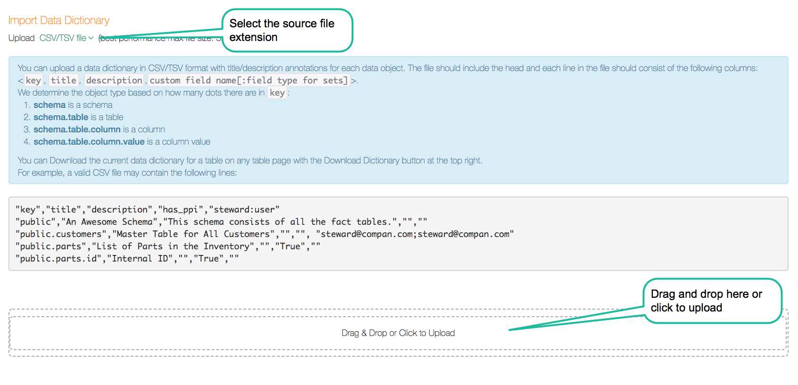
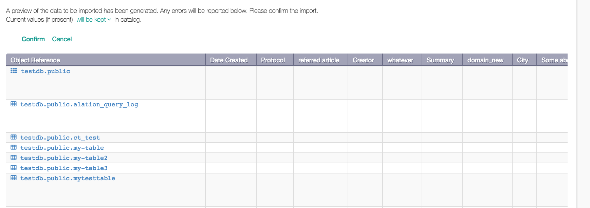
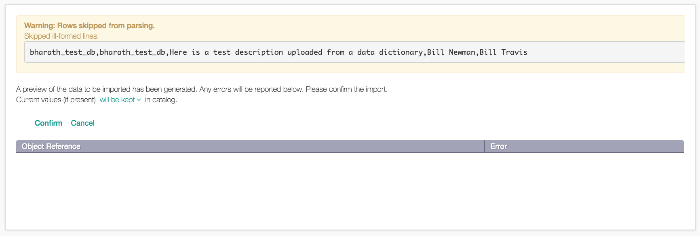
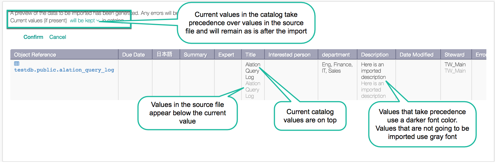
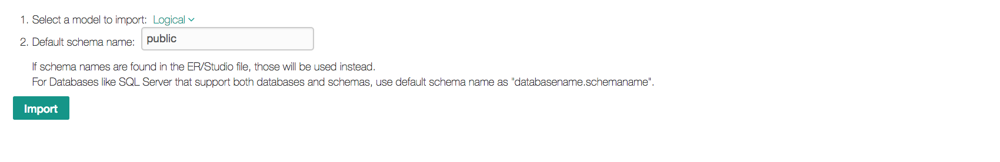
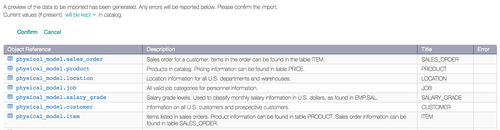
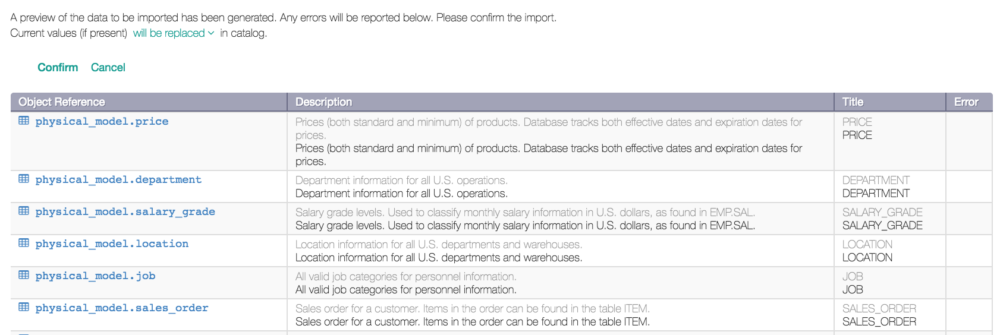

Importing a Data Dictionary in Alation 2023.3.1 and Earlier¶
Alation Cloud Service Applies to Alation Cloud Service instances of Alation
Customer Managed Applies to customer-managed instances of Alation
Note
A new data dictionary upload workflow is available in Alation version 2023.3.2 and later. Support for ER/Studio source files (.dm1 format) is not included in the new workflow.
Importing a Data Dictionary¶
You can use CSV/TSV or ER/Studio files as source files for your data dictionary upload. If you prefer using CSV, you can download the existing data dictionary, import it into a table-editing tool as a table, bulk-update values, save as CSV/TSV and upload the new version of the dictionary back into Alation.
To import a data dictionary from a CSV/TSV file:
Sign in to Alation and open the catalog page of a data source.
In the upper-right corner, click More then click Upload Dictionary. The Import Data Dictionary page opens.
From the Type of File list, select the type of your source file: CSV/TSV
Drag and drop or upload your source file in the drag-and-drop area. Note that the best performance max file size is 5MB, and overall max file size is 25MB. After you drag and drop or upload, Alation parses the source file and displays the file validation page with the description of any errors there may be. The error messages will appear on top of the page and in the Error column of the file preview.
Import Data Dictionary:

{kind=link}
Fix any errors there may be and re-import. When validation succeeds, specify how you want to treat the field values that currently exist in the catalog:
Will be kept if this option is selected, only the new values for empty fields will be uploaded from the data dictionary. This option gives precedence to values that currently exist in the catalog over the values for these fields contained in the imported data dictionary. In other words, this option loads the new values for previously empty fields, and does not change the values that already exist in the catalog.
Will be replaced if this option is selected, the values in the dictionary will overwrite the values that currently exist in the catalog. This option uploads both the new values for empty fields and updates the existing values with values from the dictionary.
Validation Page - No Errors:
Validation Page - Error:

{kind=link}
{kind=link}
There are a few things to pay attention to in the data preview of the imported dictionary: The currently existing values - if they exist for a field - appear on top of the imported dictionary values. The preview shows what is going to be uploaded vs. what is going to be ignored:
The “active” values that are going to be uploaded appear in darker font color.
The “disabled” values that are going to be ignored or overwritten appear in gray font color. If you switch between the upload options, the font color will be switching between “active” and “disabled” values.
Current vs. New Values:

{kind=link}
Click Confirm to finish the import. Field values in Alation will be updated from your imported data dictionary.
Requirements for CSV/TSV Source File¶
The source CSV/TSV file must include the head with field names in the required format and the field values for each of the data objects to be updated.
Head¶
Element |
If required |
Description |
|---|---|---|
Key |
Yes |
The key for the data object: - schema is a schema - schema.table is a table - schema.table.column is a column The data source object uses an empty key. |
Title |
Only if it is updated |
The title of the data object. |
Description |
Only if it is updated |
The description of the data object. |
All Custom Fields names to be updated |
Only if the field is updated |
The list of custom field names in the required format which will depend on the field type. |
Sample Head
"key","title","description","summary","country","expert:user","relatedtable:table","test:article","test:attribute","test:data","test:groupprofile"
Custom Field Format for Upload¶
Object Set¶
The definition for the Object Set custom field must include the name of
the field and the object type of the value in the following format: "field name:object type"
When uploading values for the Object Set field, you need to be aware of the Permitted Types included into this field. Overall, an Object Set custom field can refer to such objects as:
Data source
Schema
Table
Column
User
Group
Article
For each Permitted Object that can included in the field, you will need to add the associated object type . Use the following definitions:
Alation Object |
Associated object type to be used in the CSV/TSV head |
|---|---|
data source |
data |
schema |
schema |
table |
table |
column |
attribute |
user |
user |
group |
groupprofile |
article |
article |
Important
As the name of the Object Set field in the source file, use its Name Singular property.
For each Permitted Type included in the field, add an individual entry to the head of the file. For example, if the object set field
"test"can reference columns and articles, the head should include individual definitions for either of them - if one type of value is being updated or both - if both types of value are updated:"test:attribute","test:article"If you are uploading data object names as values, you need to use the qualified name of the object as the value, including the data source ID. For example:
70.schema1- value forschema1in data source with id =``70``70.schema1.tableA- value for tabletableAinschema1in data source with id =``70``70.schema1.tableA.volleyball- value for columnvolleyballintableAinschema1in data source with id =``70``
Example:
Assume that there is an Object Set field "Test" on the catalog
page of a Data Source A. The field includes all Permitted Types.
You want to import values for this field using a data dictionary. The
definition of the field "Test" that you need to include into the file
head will look like this:
"test:data","test:schema","test:table", "test:attribute","test:article","test:groupprofile","test:user"
The actual values may look like this:
"70","70.schema1","70.schema1.tableA","70.schema1.tableA.volleyball","Article About Schema1","qagroup","allie.robot@alation.com"
Multiple values for the same object type must use the following format:
"[""70.schema1"",""70.schema2"",""80.schema1""]"
People Set¶
The definition for the People Set custom field must include the name of the field and the definition for the object name that is referenced by the value in the following format: "field name:object type"
For People Set, you can use two object types:
user
groupprofile
Each of these types, must have an individual entry in the file head.
Example:
Assume that there is a People Set field "Expert" on the catalog page of a Data Source A.
You want to import a value for this field "Bill Travis". Bill has an account in Alation with the username "bill.travis@email.com".
The definition of the field “Expert” that you need to include into the file head will look like this:
"expert:user"
The actual value to be uploaded will look like this:
"bill.travis@emal.com"
If the set of values to be uploaded includes both users and groups, then the head should include individual definitions for both the object types and will look like this:
"expert:user","expert:groupprofile"
The actual value to be uploaded will look like this:
"bill.travis@emal.com", "qa group"
Multiple values for one type of value must use the following format:
"[""bill.travis@emal.com"",""andy.smith@email.com"",""terry.rauch@email.com""]"
Reference¶
For the Reference type of field, the head must use the following format: "field name:object type"
Permitted object types and the format are the same as for Object Set.
Picker¶
For the Picker type of field, the head must use the following format: "field name"
Example:
Head:"country"
Value:"Romania"
Multi-Select Picker¶
Head requirements for this field type are the same as
for Picker. Because there can be multiple values added to the field of this type, the
multiple values must use the following format: "[""Value1"", ""Value2"", ""Value3""]"
Example:
The field Countries is a multi-select picker:
Head: "countries"
Values: "[""Germany"", ""Canada"", ""Korea""]"
Rich Text¶
For the Rich Text type of field, the head must use the following format: "field name"
The value must use the "value" format. For example: "This is a short summary."
Date¶
For the Date type of field, the head must use the following format: "field name"
The value must use the "YYYY/MM/DD" format. For example: "2019/02/17".
Summary Table¶
Custom Field Type |
Format for Head |
Example for Head |
Format for Uploaded Value |
Value Example |
|---|---|---|---|---|
Object Set |
|
|
|
|
People Set |
|
|
|
|
Reference |
|
|
|
|
Picker |
|
|
|
|
Multi-Select Picker |
|
|
|
|
Rich Text |
|
|
|
|
Date |
|
|
|
|
Sample CSV¶
key,title,description,closure rule,dq conformity,has pii,stewards:groupprofile,stewards:user,risk & sensitivity,gold master:attribute,gdpr data compliance,policy:article,relevant dataset:table,pii compliance
census.annres_2010_2014,,,N/A,N/A,N/A,,,N/A,,N/A,,N/A,
census.annres_2010_2014.pop_2010,,,,,,,,,N/A,,,,
census.annres_2010_2014.pop_2014,,,,,,,,,N/A,,,,
census.annres_2010_2014.pop_2012,,,,,,,,,N/A,,,,
census.annres_2010_2014.pop_2011,,,,,,,,,N/A,,,,
census.annres_2010_2014.pop_2013,,,,,,,,,N/A,,,,
census.annres_2010_2014.cbsa,Core-Based Statistical Area,,,,,,,,N/A,,,,
Importing a Data Dictionary from an ER/Studio File¶
It is possible to upload the data dictionary from an ER/Studio source file. You can generate the ER/Studio file with any data modeling software you may be using that generates the .dm1 format. Note that this type of source file can be used only to upload the titles and descriptions for the data objects, but not any other custom field values.
ER/Studio Source File Requirements¶
When parsing the ER/Studio source file, Alation will identify the data objects that need to be updated and will import the titles and descriptions for these data objects. To parse successfully, Alation needs several sections to be present in the source file. Make sure your source file includes sections:
Model
Entity
Database_Role
Attribute
SmallString
LargeString
Sometimes the .dm1-generating software does not create the section Database_Role. In such a case, you can manually add this section to the file and provide the following data:
Database_Role
Database_Role_ID,Model_ID,Name_ID,Identification_Type,Password,
Description_ID,Flags,NSTFlag,CompareFlags,Global_User_ID
Importing the Data Dictionary¶
Importing a Data Dictionary from an ER/Studio file works differently from the dictionary upload from CSV/TSV. Using ER/Studio file as a source, you can upload new physical metadata in addition to titles and descriptions.
To import a data dictionary from a ER/Studio file,
Sign in to Alation and open the catalog page of a data source.
In the upper-right corner, click More then click Upload Dictionary. The Import Data Dictionary page will open.
From the Type of File list, select the type of your source file: ER/Studio File.
Drag and drop your source file onto the Drag-and-Drop area or click this area to upload the file. After the upload is complete, the import verification page will open.
Import a Data Dictionary from ER/Studio File:
{kind=link}
From Select a model to import list, select the model you want to upload:
Logical select this option if you are only loading titles and descriptions for existing data objects
Physical select this option if you want to upload titles, descriptions, and additional physical metadata
Data Dictionary Import:
You can upload titles and descriptions one schema at a time. Provide the name of the schema you are uploading the titles and descriptions for - or leave the pre-filled schema if it is the one you want to update, and click Import. The source file data will be parsed, imported and displayed in a preview. The errors, if any occur, will be reflected in the Error column of the preview.
Sample ER/Studio Preview:
When validation succeeds, form the Current values list, select the option of how you want to treat the field values that currently exist in the catalog.
Will be kept i f this option is selected, only the new values for empty fields will be uploaded from the data dictionary. This option gives precedence to values that currently exist in the catalog over the values for these fields contained in the imported data dictionary. In other words, this option loads the new values for previously empty fields, and does not change the values that already exist in the catalog
Will be replaced - if this option is selected, the values in the imported dictionary will overwrite the values that currently exist in the catalog. This option uploads both the new values for empty fields and updates the existing values with values from the dictionary.
Note
There are a few things to pay attention to in the data preview of the imported dictionary:
The currently existing values - if they exist for a field - appear on top of the imported dictionary values.
The preview shows what is going to be uploaded vs. what is going to be ignored:
The “active” values that are going to be uploaded appear in darker font color.
The “disabled” values that are going to be ignored or overwritten appear in gray font color. If you switch between the upload options, the font color will be switching between “active” and “disabled” values.
Current vs. New Values from ER Source File:
Click Confirm. The data dictionary will be uploaded to the data source.
{kind=link}
{kind=link}
{kind=link}